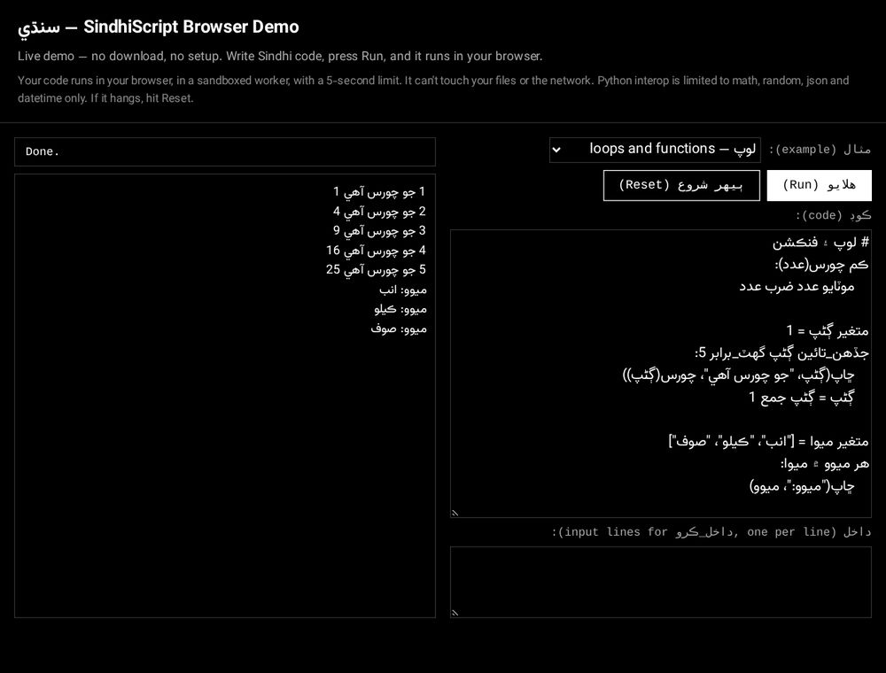
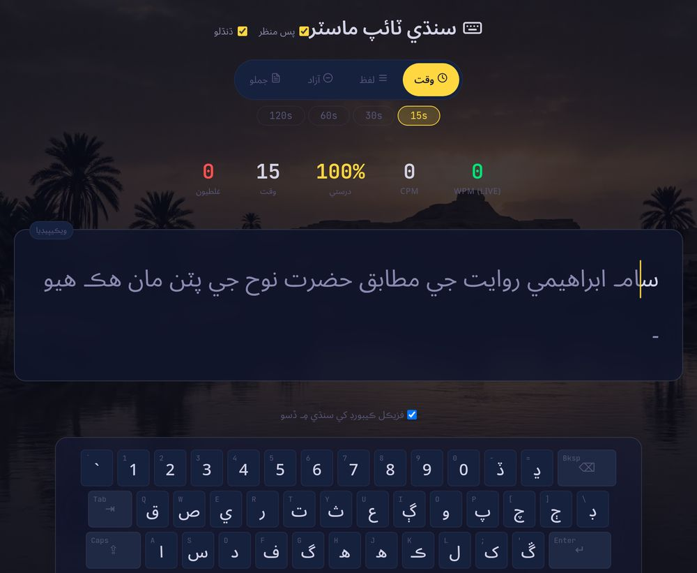

SindhiScript سنڌي
A programming language in Sindhi, not a find-and-replace over Python: its own lexer, recursive-descent parser and tree-walking evaluator.
- Closures
- Classes
- Errors in Sindhi
- Modules
- Python

CS student at SMIU, into security and systems. I wrote a programming language in Sindhi.
A programming language in Sindhi, not a find-and-replace over Python: its own lexer, recursive-descent parser and tree-walking evaluator.

A MonkeyType-style typing test for Sindhi. It pulls real text from Sindhi Wikipedia, times you, and maps the letters you keep missing.

I’m from Islamkot, Tharparkar, and I study Computer Science at SMIU in Karachi.
I build things to understand how they work underneath, which is how I ended up writing a programming language from the lexer up. Right now I’m in Cisco networking labs.
Cisco labs: switching, VLANs and port security. A diagram of the kind of lab I build.
Two small versions of my projects, running in this page.
Use a Sindhi keyboard, QWERTY (the small letter on each key; capital means Shift), or tap the keys.
Click here, then type
Keyboard order and lines come from Sindhi Typing Master. The unshifted QWERTY keys follow its keyboard guide; the Shift letters were added here so every letter is reachable.
Edit the code and press Run. The real interpreter runs in your browser; the first run downloads it (about 11 MB).
$ python -m سنڌي فيڪٽوريل.سن
1 2 6 24 120
defifreturnfor … inrangeprintThe interpreter loads from the SindhiScript live demo, so both run the same code.
Building something for Sindhi, want to talk interpreters, or have a security problem worth poking at? Email is the fastest way to reach me.
alinawaz.work.726666@